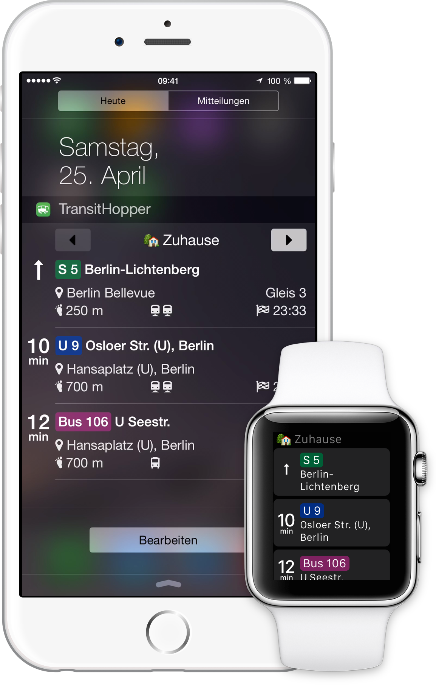

TransitHopper
„TransitHopper“ ist ein praktisches iPhone Widget, dass Ihnen nahegelegene Abfahrten des Nah- und Fernverkehrs in der Heute Ansicht der Mitteilungszentrale anzeigt.
Einmal Ihre Lieblingsorte speichern und das Widget aktivieren, schon sehen Sie die nächsten Abfahrten von Ihrem aktuellen Ort mit einem Wisch vom oberen Bildschirmrand nach unten – deutschlandweit.